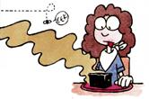
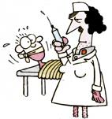
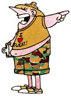
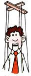

The Weird Humor Of Jack Vaughan
Cartoon.
By the Mother Earth News editors
September/October 1985
Back-to-School Pop Test
You have 30 minutes to read and answer the questions on this page. No cheating! (The quiz can be found in the image gallery).
When you finish, sign your magazine and pass it to the front of your room. Good Luck!
|
 Most school lunches are: A. Healthful, nutritionally balanced culinary masterpieces. B. Something I could conceivably get hungry enough to eat . . . maybe. C. Peat moss with soy extender. |
 Health room nurses are: A. Kindly grandmothers with ample supplies of sick leave passes. B. Experienced and competent professionals with all the latest equipment. C. Nazi war criminals who hate kids your age. |
School counselors are: A. Trained professionals who will do everything possible to help you get a job earning more than they do. B. People who listened to their own school counselors. C. People who made D's on their aptitude tests. |
 Pop tests (except this one) are: A. The teacher's way of monitoring your scholastic progress. B. The teacher's way of weeding out the mentally insufficient. C. The teacher's way of keeping you on restrictions until you're old enough to leave home. |
 The best way to impress the other students is to: A. Have your own car. B. Date the cutest person in school. C. Let your mother cut your hair and pick out your clothes. |
 Gym class is: A. A class that stresses physical, rather than mental, education. B. A class whose only homework assignment is to have muscle aches. C. The only class that requires you to take off your clothes. |
|
Substitute teachers are: A. Ex-teachers who voluntarily fill in for other teachers during illness. B. Somebody's mom who's been snookered into baby-sitting for a roomful of ""little darlings."" C. Fair game. |
 A student body president is: A. A fellow student selected by his or her peers for outstanding leadership abilities. B. The most popular kid in school. C. The powerless head of a puppet government run by the teachers. |
Art class is: A. Where you are encouraged to express your creativity in paint, clay, or ink. B. Study hall with crayons. C. A variation of the food fight. |
|
Homework is: A. Necessary drill and practice exercise designed to improve a student's basic skills. B. A nightly ritual intended to reintroduce long-forgotten basic skills to parents. C. The staple food of small dogs. |
|
|